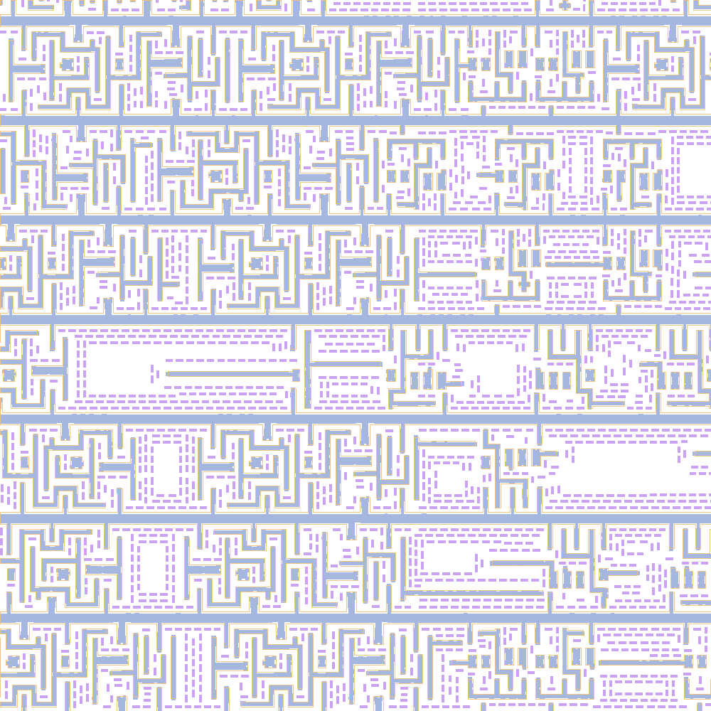
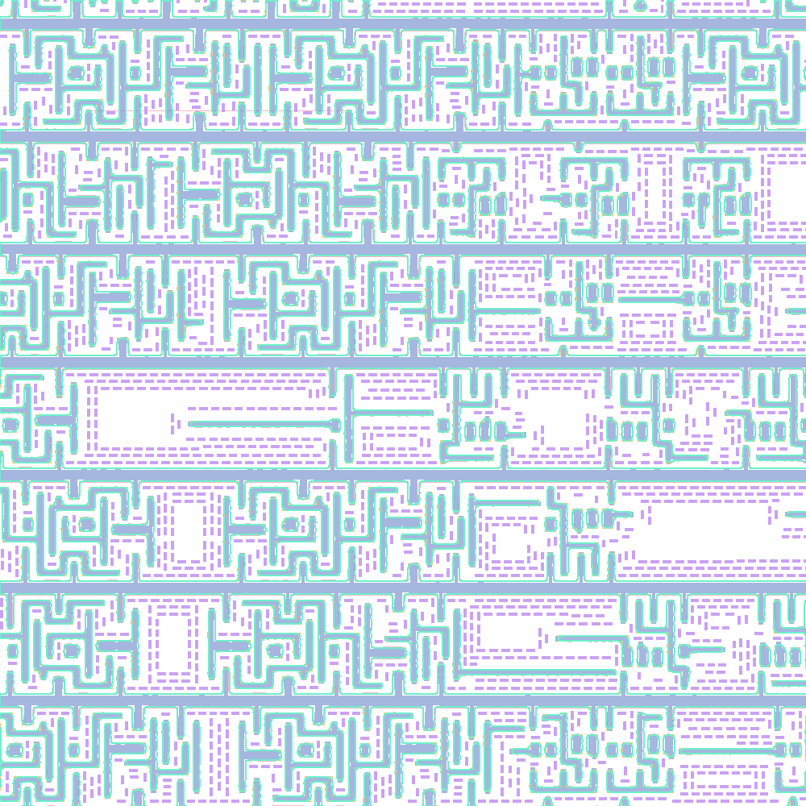

POLY02 · 100 TRIALS
4.477 nm
VPEvolve final maximum EPE · Frozen: 5.267 nm
Loading measured curve…
A VIRTUAL PROCESS ENGINEER
A virtual process engineer reads process manuals and layout evidence, edits the recipe, and learns from commercial-tool feedback. An LLM reflector and curator turn every trial into guidance for the next.


Dense Metal45 · verified endpoint · measured geometry
Poly maximum-EPE reduction
from the initial recipe
Metal1 maximum-EPE reduction
from the initial recipe
Feasible endpoints
across Poly and Metal1
Physical trials per window
with AI analysis after each
01 / FROM A RUN TO THE NEXT DECISION
A lithography recipe combines a short global model setup with thousands of lines of local rules. Engineers add these rules to recognize and repair recurring EPE hotspots and MRC violations.
VPEvolve gives the virtual process engineer process knowledge, layout analysis, recipe editing, and commercial-tool evaluation. An LLM reflector interprets each trial; an LLM curator distills its lessons into a Skill Bank for later decisions.

02 / THE HARNESS
The virtual process engineer combines process manuals, layout analysis, recipe editing, and commercial-tool evaluation. After every trial, an LLM reflector analyzes the result and an LLM curator updates evidence-linked skills for the actor to retrieve.

The actor reads the recipe, process manuals, and measured layout feedback before proposing a global parameter edit. The commercial tool evaluates the candidate under fixed quality limits.
Global edits share one ten-trial budget with local rules and diagnostic experiments.
03 / THE HOTSPOT, UP CLOSE
A measured hotspot remains after global exploration. A pattern-guided rule moves selected mask edges. Inspect the same location before and after local correction—at its true physical scale.
Loading measured hotspot…
The fixed-focus error tracks one coordinate; the full-core maximum searches every gauge. These close-ups illustrate the correction mechanism. The paired experiment below uses ten VPEvolve cases.
SAME START. DIFFERENT NEXT STEP.
Ten matched cases continue from the same pre-local recipe, with four more trials per branch.
| Layer | Shared start | Global only | Global + local | Added reduction |
|---|
Allowing local rules reaches 18.012 nm on Metal1 versus 18.583 nm with global edits alone. On Poly, the endpoints are 5.185 and 5.238 nm.
Each branch adds four trials and updates experience. The five Poly and five Metal1 pairs share their starting recipe, feedback, and quality limits; all 20 continuations complete.
04 / ONLINE ACTOR–REFLECTOR–CURATOR RUN
On 20 windows cropped from FreePDK45-generated full-chip layouts, the actor runs ten physical trials per window. LLM reflection and curation turn each measured result into evidence-linked guidance for the next decision.
Loading measured results…
| Layer | Max EPER0 → final · nm | Mean EPER0 → final · nm | PVBR0 → final · 10⁻³ µm | Success | OPC / LLMtotal calls |
|---|---|---|---|---|---|
| Loading measured results… | |||||
All 20 retained endpoints improve maximum EPE by at least 0.1 nm while meeting the mean-EPE, PVB, MRC, and SRAF-printability limits. Each layer uses 120 physical calls, including R0 and endpoint repeats. The actor, reflector, and curator use the same frozen Qwen3.6-27B-BF16 model.
INSIDE THE PHYSICAL RESULT
Look through the target layout, corrected mask, assist features, nominal resist contour, and process variation band. Explore two measured dense windows. Switch from the whole layout to a 180 nm detail of the measured hotspot.
Loading measured geometry…
Dense Poly19 and Metal45 are selected measured recipe cases. Close-ups stay centered on the worst gauge just before local correction begins. The full-window maximum can move elsewhere. All layers are co-registered; resist is the simulated nominal contour, not a photograph.
05 / MATCHED BASELINES
VPEvolve and six agent baselines work on the same 20 Poly and Metal1 windows. Each receives ten recipe trials per case, with the same physical evaluation and quality limits.
Comparing matched endpoints
| Method | Max EPE ↓nm | Mean EPE ↓nm | PVB ↓10⁻³ µm | Complete | Success | OPC / LLMtotal calls |
|---|---|---|---|---|---|---|
| Loading final results… | ||||||
Values are means of retained recipes for the selected group; use the layer tabs for separate Poly and Metal1 results. Success requires a feasible maximum-EPE reduction of at least 0.1 nm. Each method uses ten candidate trials per case; the call ledger includes the initial evaluation and endpoint repeat.
06 / EXPERIENCE EVOLUTION
Full VPEvolve and four mechanism variants run on the same 20 cases. The comparison tests accumulated experience, domain response reflection, scoped revision, and experiment guidance.
Loading final mechanism results…
Loading measured comparison…
Cards report mean maximum EPE for the best feasible recipes retained across each group. Completion counts distinguish runs that finished all ten trials and passed endpoint repeat.
PAIRED EXPERIENCE STUDY
At the fifth trial, each case branches from the same retained recipe and raw trial history. One branch receives ACE experience; the other receives VPEvolve experience. Both snapshots stay fixed during five additional trials.
| Layer | Shared start | ACE experience | VPEvolve experience | VPEvolve lower by |
|---|---|---|---|---|
| Loading paired results… | ||||
Ten paired cases per layer. Both branches use the same observations, model, available actions, and remaining evaluation budget; only the supplied experience differs.
07 / CROSS-MODEL FULL RUN
DeepSeek Flash takes every model role—actor, reflector, and curator—on the same 20 cases and ten-trial budget. The table compares it with the Qwen3.6-27B full run.
| Layer | Model | Max EPE ↓nm | Mean EPE ↓nm | PVB ↓10⁻³ µm | Complete |
|---|---|---|---|---|---|
| Loading cross-model results… | |||||
The comparison uses the complete VPEvolve workflow in both runs. Starting recipes, cases, actions, and physical trial budgets are matched.
08 / LONG-HORIZON OPTIMIZATION
On Poly02 and Metal29, Full VPEvolve and Frozen Experience start from the same recipe and run toward a 100-trial horizon. Follow the retained recipe after every measured trial.
VPEvolve final maximum EPE · Frozen: 5.267 nm
VPEvolve at trial 100 · Frozen: 13.348 nm at trial 57
Poly runs complete 100 trials. Metal29 Frozen stops after trial 57; at that common point VPEvolve is at 12.470 nm versus 13.348 nm for Frozen. VPEvolve continues to trial 100. Curves end at the last observed trial and omit endpoint repeats.
09 / OPEN CODE & DATA
The VPEvolve code, a standalone differentiable lithography simulator, and 20 GDS windows from FreePDK45-generated full-chip layouts are available in a dedicated Apache-2.0 repository.
Agent and harness, experiment configurations, initial recipes, the simulator, and all 20 layouts.
Download full source ↓Differentiable optical and resist simulation, analytic modes, examples, tests, and the layout set.
Download simulator ↓Ten Poly and ten Metal1 windows, with layer labels, scoring-core coordinates, and SHA-256 hashes.
Download layouts ↓The agent pipeline uses a separately licensed commercial tool and process model. The standalone simulator runs optical and resist experiments. Browse the repository ↗